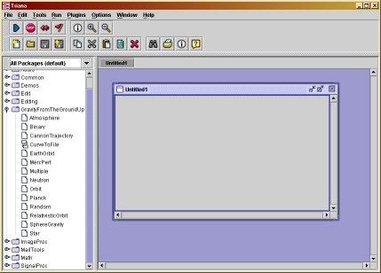
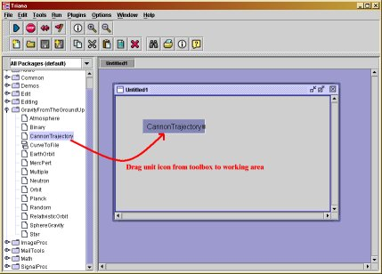
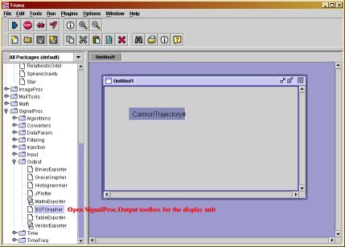
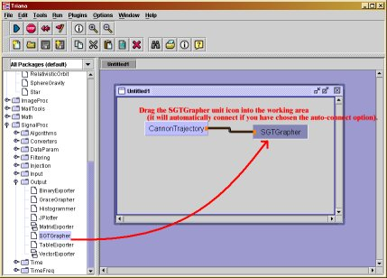
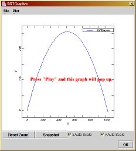

Using Triana
for Gravity from the ground
up
version 1.0
©
2003 Bernard Schutz
A brief introduction to the Triana
programming environment.
|
Contents
What is Triana?
Triana is a computer program that helps users to develop and run their
own programs. Triana is called an "environment": users work within it
to
accomplish their programming goals because it is easier to do this than
to program the computer directly to do what they want. Triana has been
developed by scientists at Cardiff
University in Wales, initially as part
of the GEO600
gravitational wave detector software development activities.
More recently the Triana project
has developed capabilities that serve
a much wider range of users. Triana is written in the Java programming
language, but it can support and run programs written in other
languages
as well.
All the programs for the book Gravity from the ground up are
included in the version of Triana that users can download from the
book's
website.
Also included are tools for displaying the results of the programs,
either
as graphs or as lists of numbers in files Triana supports all readers
of
the book, from those who do not want to do know how the programs work
to
those who want to modify and extend the programs or even create new
ones.
Here are ways in which Triana can help users at different levels:
- Run programs without looking at
the code. Without knowing any details of the programs, users can
run them, look at
their results, and even modify what they do in certain ways. For users
who do not want to do programming, Triana hides all the details and
provides
a simple drag-and-drop interface to get things running. Each program
has
an extensive help file that shows how to run
it
and what control the user has over the way the program works. From the
point of view of users of the computer programs for the book Gravity
from the ground up, Triana hides all the details of how to run
programs
in Java and allows the user to concentrate just on the book's computer
programs themselves. Triana knows how to run these programs on the
user's
computer, so all the user needs to do is to push the Start button on
the
Triana window and wait for the result.
- All programs have certain user-specified numbers, which Triana
calls parameters.
These parameters are shown to the user in a simple window, and the user
can modify them and then run the program with the new values. For
example,
in the help file for the program Orbit,
there is a section called "Using Orbit"
which describes all the parameters in detail, complete with a picture
of
the window in which users modify the parameters. All the help files for
the other programs contain similar sections.
- This allows the user, for example, to examine orbits of planets
around
the Sun or of the Moon around the Earth using the Orbit
program, just by changing the parameters for the mass of the central
body
and the radius of the orbit. In this way, users who do not want to look
at the details of the computer programs can still see their results,
and
indeed use the programs over and over again to discover new results.
- Some of the programs provided are very powerful and can be used
to
study
rather complex physical systems. The help file for Orbit,
for example, contains a section called "Suggestions
for playing with Orbit", in which
users
are guided toward interesting new uses of the program. Most of the help
files for other programs have a similar section. By
consulting the help files, users need never look at the programs in
order
to learn a great deal about the gravitational physics they explore.
- Understand how programs work.
A user who wants to study the way a program works but not to modify it,
or to attempt any new programming, should consult two sources:
- The document Introduction to
Programming
in
Java helps users learn the basic features of the Java programming
language,
so that they can understand how the programs work. Users who know Java
can skip this document. Users who have already done some programming in
other languages, like FORTRAN, Basic, or C, will need to read this
introduction
only to see how to write in Java the things they already know how to do
in these other languages.
- Each program's help file contains a
discussion
of how the program works. In the help file for CannonTrajectory,
for example, there is a section called "Understanding CannonTrajectory",
which discusses how the program is built. It refers to the relevant
sections
of the book that deal with this program, and it links to the Introduction
to Programming in Java when the program uses specific features of
Java.
Further along in the help file is a full listing
of the Java program for CannonTrajectory
and of the definitions of its parameters. The help files for all the
other
programs have similar sections.
- Modify programs or create new
ones. Ambitious users who want to modify programs will also find
Triana a very
supportive environment.
- As described below, Triana contains a
built-in
program editor, and it even allows the user to specify an alternative
text-processing
program for editing the code. Once a program has been changed, Triana
has
menu options to compile the program and do all the auxilliary things
necessary
to make it work within Triana. If there are errors in the program,
Triana
shows the user the error listing and allows the user to try again once
corrections have been made. In this way, users do not need to learn any
details of how to use Java itself for compiling and running programs:
Triana
takes care of it all.
- Users who want to create completely new programs are also
supported by
Triana. It contains a "wizard" that leads users step-by-step through
the
process of definng new programs and their parameters, and it then
creates
a program file containing all the code needed to run the program within
Triana. All the user has to do is to create the code for the new
program,
compile it, and run it. All of this is described below.
Using Triana
Triana has a simple drag-and-drop model, in which the user selects an
icon
from a list of programs (called units)
already available in Triana (arranged in groups
called toolboxes), drags the
icon into a working space within the Triana
window, then drags an icon to display the output (as a graph or as a
text
file, in the simplest cases), and draws a line from the program icon to
the display icon. Each of the dragging and drawing operations should be
done while holding down the left mouse button while moving the mouse.
Releasing
the button finishes the operation.
When an icon is dragged into the working area, it is displayed as a
rectangle with the name of the unit written in it. It may be shown with
one or more small black squares on its right
edge; these are called output nodes
and represent the places where data
leaves the unit. Similarly, each icon may have black squares on its
left
edge, which are called input nodes,
and they are places where data comes in. For the network
to function at least one output must be connected to an input, but not
all nodes need to be connected if you do not want to use the data they
represent. The number and function of the output nodes for the programs
are described in the help files for the programs.
To run the network, press the "Play" button (the green triangle on
the left in
the top row of buttons). Triana executes the program and produces the
requested
display of information. The steps involved in creating and running the
first of the programs for Gravity
from the ground up are shown in the following succession
of screen-shots of the Triana window.
    
Once you have a working network of units, you may want to change
things.
Here are several tips:
- To open the parameter window
for a unit, double-click on the unit in the
working area. The parameter windows of all the units are shown and
described in the units' help files. Once you change the value of a
parameter, click on "Apply"
or "OK" in the parameter window to make the change take effect the next
time you run the unit. The difference between the two buttons is that
"OK"
will shut the parameter window while "Apply" keeps it open.
- The unit SGTGrapher, which is
supplied
to
display the data from the programs graphically, shows the graph when you
double-click on it. When you run the network the first time, this graph
opens automatically. But later it might get hidden or closed, so to see
it again simply double-click on the icon.
- To remove a connection
between
two units, double-click on either end, or
simply draw a new connection from its starting point or to its ending
point.
- Some of the program units have more
than one output node, from which they
output different data. To graph all the data at once, which is usually
what the unit requires, you need to create more input nodes on the
grapher.
This can be done in two ways. One way is to click with the right mouse
button on the icon for the grapher in the working area, and choose the
option "Node Editor". This opens a window in which you can determine
how
many nodes you want. Alternatively, the second way is to hover the
mouse
over the unit icon, which causes a small "+" to appear near the input
nodes.
Click on the "+" and the unit will create an additional input.
Similarly,
to reduce the number of nodes click on the "-" that also appears when
you
hover. Once you create the new nodes, draw a connection between them.
Triana has several features that make even these simple procedures a
little
easier.
- You can ask Triana to make
connections between units automatically as soon
as they are dragged into the working space. In the menu "Options/Triana
Options..." click on "Auto Connect". The next time you drag a unit into
the
working area, Triana will make the best choice it can about where you
want
to connect this. This feature is very convenient for simple networks
like
the ones we will use.
- You can ask Triana to automatically
save the current network in the working
area when you close Triana and open it again the next time you start
Triana.
It will do so with the current choices of parameters, so that you can
resume
working exactly where you finished. You set this up again from the
"Options/Triana
Options..." menu. This feature is selected by default, so you only need
to go to the menu if you want to turn it off.
- Each unit, including the programs for the book and the grapher,
has a help
file. You can access these files by clicking the right mouse
button on
the icon in the toolbox and selecting "Help".
- Triana offers extensive tool-tips,
which are small boxes containing information
that appear when you hover the mouse over a unit or a button. These
help
you to understand what the unit or button does.
- To delete a unit just
right-click on it and choose "Delete" from the menu
you get by right-clicking on the icon. Alternatively, click once with
the
left button on the unit to highlight it, and press the "Delete" key on
your keyboard.
- You may have a set of units that you want to use over and over
again.
You
may save units as a group,
move them into a toolbox, and then drag them
out again, all together, any time later. Simply click once on the units
you want to group so that they are selected (highlighted) and choose
the
"Edit/Group..." menu option. They will be combined into a single yellow
unit,
and a separate working area will open showing you the membership of the
group. You can then save the group in a toolbox by right-clicking on
the
yellow icon and choosing "Save...".
Getting data from program units
The first time you get data from the units you should display it
graphically
using SGTGrapher. This unit will
display
on a single graph all data that it receives from its input node(s). For
some units, you have a choice of output data: the unit will produce one
of the choices at any time, but not all. This happens when the data
have
different dimensions, and therefore should not be displayed on the same
graph. However, you can still see them at the same time. Simply create
two duplicate networks in the same working space, consisting of the
program unit and the grapher,
and choose different outputs for the program units. When you run the
networks,
you will get two different graphs with the related data.
SGTGrapher has various options for
altering
how the data are displayed. These are accessible from its "Plot" menu.
You can choose linear or logarithmic scales for either or both axes,
and
you can choose things like line colors, line styles, or even whether to
plot lines or individual points or both. You can force Triana to
display the x- and y-axes using the same scale (useful if the graph is
giving you a view of a region of space in which particles are
orbiting). You can print the graph or (if
you have configured a printer on your computer that saves a postscript
file) output to a postscript file. If the numbers labeling the axes are
hard to read because they are too long and overlap, then SGTGrapher's "Plot" menu allows you to tell
Triana to take out common factors of ten or subtract a common large
value from the scale display values.
There are times when you might want to output the numbers output by
the program unit rather than look at the graph. You may be interested
in
the exact values of the data, or you might want to save the data so you
can input it to a graphing program that produces better graphs than SGTGrapher
can. To get the numbers, use the unit CurveToFile
instead of SGTGrapher. Double-click on
this
and enter the name of the file you want the data to be written into.
When
you run this network, no graph will appear, but the file will be
written
with the data in two columns, which represent the x- and y-values of
the
data points. Use a separate CurveToFile
unit
for each of the output nodes if a program unit has more than one.
Notice
that the icon for CurveToFile in the
toolbox
is different from most of the others. That is because it is a group
unit,
as described above.
Advanced use of Triana: changing programs
Most of the help files have a section called "Suggested modifications
..."
in which users who are more ambitious are pointed in diretions that
would
either improve the efficiency of the programs or enlarge the scope of
the
physical situations that the program would cover. In this section we
look
at how to "open the hood" of the Triana units and change the code that
makes them work. To do this you need to have the full Java development
kit (SDK) installed on your computer. See the website for the book to
find out
how to obtain this. It is free, but it is a large package and takes
some
time to download if you don't have a fast connection. Triana requires
SDK version 1.4 or later.
Terminology. Let us first
establish some Triana terminology. The left-hand pane of
the Triana window is the toolbox window. The programs are
groups
into toolboxes, and the programs themselves are called tools.
When you drag a tool into the working space in the main part of the
Triana
window, we call it a unit. The words tool and unit
are used almost interchangably. When you look at the code of a tool you
will see that it actually consists of several program units. In Java
these
are called methods, while in the C programming language they
would
be called functions and in FORTRAN they would be called subroutines or
functions.
Editing the code. To change
a program, go to the toolbox containing the tool you want
to modify, and then right-click on the tool's icon in the toolbox. You
will get a menu that includes "Edit Source". Choose this, and Triana
will
open an editing window. It will either use its built-in editor or one
you
have previously directed it to use by giving the full path to the
editor
code under the main menu option "Triana/Triana Options ..." and the tab
"External Tools".
The first thing you will notice is that the code for the unit
contains
a lot more methods and other statements than are shown in the listing
in
the help file for that program. The help file shows you all the code
that
you need for doing the calculation that the unit is supposed to do. But
the code for the unit has also to help do all the things that Triana
does
for you automatically. These include popping up the parameter window
when
you want it, initializing the unit so it starts right, coping with
situations
where you might want to push the "stop", "reset", or "flush"
buttons
on the Triana main window (which basically are emergency measures that
you are unlikely to need unless you program the unit wrongly!),
checking
the type of data that leaves a unit to make sure that the receiving
unit
knows what to do with it, and so on.
Parts of the code you need to look
at. You are of course welcome to scan through all these other
methods to
see what they do, but in the end you will only have to deal with code
in
a few places. When Triana creates a brand new unit (as described in the
following
section) it even writes almost all the code for you automatically.
Here are the key features of the code that you need to deal with:
- The method process contains the
main
code
for the unit. Triana calls this method each time it wants to run the
unit.
The units containing the programs for Gravity from the ground up
do not have input nodes: they all generate their own data without
importing
data. Therefore they are run only when you press the "Start" button on
the main Triana window. Each process
method
ends with an output step, where the unit is instructed to send the data
to the output node(s), where Triana will ship it off to whatever unit
is
connected to the node(s). Before that, the code in process
does whatever is needed to generate the data. The help files all show
the
complete code for process, and this is
the
method you will need to modify to implement changes in the way the unit
works.
- The parameters are an important part of the way the unit works.
Modifications
of units are far simpler if you do not modify the parameters, because
parameter
handling in Triana is necessarily somewhat involved. Parameters have to
be available to the user in the parameter window, their default values
have to be known to the unit in case it is reset (which puts the values
of parameters back to their defaults), and the unit needs to learn when
the user has modified the parameter values in the parameter window so
it
can use the new values.
The parameters are simply variables within the unit that are defined
outside
any of the methods in the unit. According to the rules of Java, this
means
that every method in the unit can access these variables: their names
are globally
defined within the unit. (Normally, a variable defined in one
method
is unknown to other methods; by defining variables outside of the
methods
we create memory that all methods can use if they want.) Parameters can
be of any Java type: ints, doubles,
character strings, even more complicated data objects.
Outside the unit, however, Triana does not have access to these
variables,
and in particular it does not know what data type a parameter is.
Triana
passes information about the values of parameters between the parameter
window and the unit's own code using character strings. Thus, if a
parameter
is a double that the user defines to
have
the value 1.0, then Triana actually passes a character string
containing
the characters "1.0" back to the unit, and the unit has to convert this
into a binary number and assign it to the parameter.
To facilitate this data passing, each variable has a keyword name,
which
is a character string that serves to identify it to the unit and to the
parameter window and to any other part of Triana that needs to deal
with
it. Normally, programmers use the same name for the keyword as the
internal
name in the unit. In MercPert, for
example,
there is a double called mSun,
for example, which is to hold the mass of the Sun. This is known to the
parameter window by the character string "mSun". This is sensible, but
it could have been defined to be anything else, like "parameter1", and
parameter passing would work just as well.
So here is how this parameter defining and passing works. If you want
to
add or modify parameters you need to make changes in each of these
places.
Examples are drawn from the code for MercPert.
- Parameters are defined in the code for the unit at the very
beginning,
in a section that begins with the comment
// parameter data type
definitions
This code is reproduced in the help file for the unit. Parameter values
are not given here. The purpose of this code is simply to establish
storage
locations in the unit's memory where these parameter values can be held
and be accessible to all the methods of the unit.
- The method init is called by
Triana when
the unit is first dragged out of the toolbox and into the working area.
It sets up the initial values of parameters and defines what will be
shown
in the parameter window. For intiializing parameters it uses lines like
defineParameter("mSun",
"1.0",
USER_ACCESSIBLE);
This is a call to a method defineParameter
that is not part of the unit's code, but is defined in a different part
of Triana. It associates the default value of 1.0 as a character string
(for passing) with the keyword for the parameter mSun,
which is the character string "mSun". The final argument of this method
is USER_ACCESSIBLE, which tells Triana
that
users can modify this parameter. (Triana can use parameters in other
ways
as well, which we do not need to go into. All the parameters in the
programs
for Gravity from the ground up are accessible to users.)
:Later in init there is the line
guilines += "Give the mass
of
central body (the Sun) in solar masses $title mSun TextField 1.0\n";
which is the code that Triana uses in order to build the parameter
window in which users can change the parameter values. It consistes of
a single character string that Triana takes apart into several pieces.
The first piece is simply the words that are written into the parameter
window to guide the user in what the parameter means. These words end
with
the keyword "$title". What follows that is the keyword name of the
parameter
for data passing, which in this case is the character string "mSun".
This
is followed by another keyword "TextField" which tells Triana to allow
the user to enter the values in the parameter window simply by typing
them
into a little text window. (Other parameters in other units have
different
ways of entering data, such as choice boxes or sliders, and these use
different
keywords here.) Finally the line ends with a character string giving
the
default value of the parameter "1.0". This must be consistent with the
value defined in the earlier defineParameter
line, shown above. If you redefine the default value make sure you
change
it in both places.
- The next place parameters turn up is in the reset
method, which is called in emergencies. It needs to re-initialize the
parameters.
In MercPert for example this contains
the line
mSun = new Double((String)
getParameter("mSun")).doubleValue();
This line tells Triana to invoke the method getParameter (which is
defined elsewhere in Triana) to get the character string "value" of the
parameter whose keyword name is "mSun", and convert it into the binary
representation of a double, which is
then
assigned to the variable mSun. This
rather
complicated statement invokes a Java utility function that does the
conversion
of a character string into a binary.
- Finally, the unit contains
the method that is used to associate
the keyword
character-string name of the variable with the variable itself within
the
unit. This happens in the method parameterUpdate.
The statement in MercPert for the
variable mSun
is
if (paramname.equals("mSun"))
mSun
=
new Double((String) value).doubleValue();
The variable paramname is a character string that is an argument of parameterUpdate,
so it is passed to this method when Triana calls it, for example after
the user changes the value of the parameter in the parameter window.
The
format of this line is the same as in the reset
method except that the character-string value of the parameter is held
here in the variable named value,
which is
another argument of this method.
- In MercPert
we have to do a
little work on
some of the parameters to get the information out of them that we need.
This is done by the method decodeParameterString,
which is not a standard Triana method but is part of the code created
specially
for this unit and for other units that need to do similar things.
- There are other possible places where you need to understand how
Triana
works with units.
- In the init method there are
lines
that define
the maximum and minimum number of output and input nodes. Normally you
will not need to change these.
- When a unit wants to do output, the simplest way is to use the
method
called output.
This works only if there is only one data set to be output. If, as in MercPert,
there are more than one, then you have to assign them to different
output
nodes, and this is done with the method outputAtNode.
The code is pretty self-explanatory.
- The variable that is given to the output methods to pass on to
the next
unit is not a simple internal variable. Triana uses specific objects
that
are designed not only to transport data but to tell the grapher units
enough
information to allow them to be graphed. Gravity from the ground up
uses the data type Curve, which is
defined
elsewhere in Triana. To create a Curve
for
passing data, you use the syntax
new Curve( x, y )
in which a new Object of this type is created from two double[]
arrays called x and y,
which hold the x- and y-coordinate values of the points
to
be plotted on the curve. When a Curve
Object
arrives at, for example, SGTGrapher,
it automatically
plots the data in the right way.
Re-compiling the code. When you
have finished modifying the code (and saved it in the file bearing
the name of the tool and the extension ".java"),
then it has to be re-compiled and re-integrated into the Triana
environment,
so that all of Triana knows how to work with the unit. A lot of things
happen behind the scenes, but you don't have to worry about them.
First,
in the main menu "Options/Triana Options ...", go to the "external
Tools"
tab and fill in the path for the javac compiler, which comes with the
full
Java development kit. You go to the directory where you put the kit, go
to the "bin" directory, and find the file called "javac" or
"javac.exe",
depending on what operating system you are using. Write the full path
to
this file into the options window.
The compile wizard. Next,
go to Triana's main menu bar, select the "Tools" menu, choose
"Compile Unit/Generate Tool XML ...", and look at the window (called
the
compile
wizard) that pops up. It seems rather complicated, but it will
largely
fill itself in if you do the right things. First, make sure that the
third
line shows the path to the toolboxes you are using, which is generally
the default value that comes up. Then in the second line click on the
little
square window containing "...", which opens a file browser where you
select
the source file for the tool you are modifying. You will have to follow
the path from the toolbox name through the directory "src"
to the list of files of type ".java".
Select
the one you have modified and press "OK".
This fills in all the relevant lines of the compile wizard. Just press
"OK" again at the bottom of the compile
wizard.
Triana will invoke your javac compiler. If you have not made any errors
in coding the changes, Triana will show you a window confirming that
the
compilation has gone well. You are done!
Coping with errors. If you
are unlucky enough to have had errors, Triana will keep the compile
wizard window open and also show you a window containing the error
messages
from the javac compiler. Make the corrections required and then hit "OK"
again in the wizard window. You may have to go through this cycle
several
times if you have made complicated changes or if you are a novice
programmer
and need to learn from your mistakes!!
When the compiling is finishes, you should be able to pull the unit
out of the toolbox and use it with the grapher or other output units.
It
is possible that, when you start the network, you will get further
error
messages. These are called "run-time errors", and represent things that
go wrong, not because you have made a mistake in using the Java
language,
but because you have made a mistake in the way different parts of the
program
interact with one another so that the normal execution could not
proceed.
The javac compile cannot anticipate all such possibilities. Sometimes
Triana
pops up an error message, other times the program stops and you have to
look at the command window within which Triana is running for the error
message output. These generally are very helpful, pointing you to
exactly
the line in your code where the problem was encountered. You need to
change
your code, re-compile, and re-run in order to fix such problems.
The
ultimate: creating new units in Triana
Programmers who have gained confidence with Triana by modifying code,
as
in the last section, may want to go further and create programs to do
different
things from the ones provided for Gravity from the ground up.
Triana
provides tools to help with this process too. Not only does it provide
an extra unit-creation wizard, but it provides extensive help
documentation
for all aspects of the process.
The unit creation wizard.
The main additional tool is the unit creation wizard. This is
a more elaborate affair than the compile wizard. Go to the main Triana
menu bar, select "Tools", and select "New Unit". This opens the wizard
in a separate window. As with the compile wizard, first go to the third
line and choose the main toolbox path that you want the unit to be in.
You can add units to the standard Triana toolboxes, but you may want to
create your own toolbox for tools you created. You do this in the main
"Tools/Edit Toolbox Path" menu. Having set up a directory, which can be
anywhere on your disk, for new tools, select this in the third line of
the first window of the wizard. Then, again as for compiling, select
the
box "..." in the second line, and within the file browser find the
toolbox
name in which you will store the new tool. Then enter the name of the
new
unit into the first line of this window. Fill in other other lines,
like
the author name, the popup description (which will appear when you
hover
the mouse over the unit), the date, and the name of the help file
(which
you should always write). Then choose options regarding the number of
input
and output nodes, which depends on what you want the unit to do. Then
press
"Next".
The window changes into one that allows you to define the data types
the new unit will input and output. If you want to deviate from the
pattern
of this book (no input, Curve output) then you should read the
documentation
that comes with Triana to see what data types are available. After
selecting
the types, press "Next" again.
The next window allows you to define the parameters you will use in
the new unit. All the properties of the parameters are decided here.
You
may add parameter, remove mistaken ones, and change their properties at
any time, even coming back to this screen from later ones by using the
"Back" button. Of course you do not need to define any parameters if
you
do not need them.
The next window allows you to set up the way the parameter window of
your unit will work. Select "GUI Builder Interface". For each of the
parameters
you have defined to be user accessible, Triana will allow you to
specify
the text that appears in the window near the parameter (enter this in
the
"Title" field), to enter the default value of the parameter, and to
select
how changes in this value are to be made in the parameter window (a
text
entry, a slider, a choice box, etc.). When you have entered the
information
for all parameters, select "Preview GUI" to make sure the window looks
as you want it. Then press "Next". You will get a final confirmation
screen.
What happens next. When you
finish this wizard, Triana will create several files for you,
including the ".java" file containing
the
source code. It will have all the code for parameter handling that was
described in the previous section, and all the
other auxilliary code you need. It will contain a process
method, but it will be essentially empty. This is where you have to
write
the code for what you want the unit to do. The toolbox will contain the
icon of your unit, but you will not be able to drag it into the working
space yet because you have not compiled it.
The remaining work is just like the work for changing a unit,
described
in the previous section. You go to the icon of
your new unit in the toolbox, and open the editor. Then you create the
code for your unit, not forgetting the final output step! Then compile
it and run it!
Congratulations!
If you have succeeded in this task, then you are a real Triana
programmer.
You might want to go to the Triana website and download the full
version,
which contains a wealth of tools that are not part of the distribution
for this book. These do image processing, text processing, signal
processing,
sound processing, and other jobs. Welcome to the Triana developer
community!